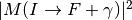
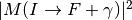
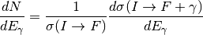

hazma.gamma_ray.gamma_ray_rambo¶
-
hazma.gamma_ray.gamma_ray_rambo(isp_masses, fsp_masses, cme, mat_elem_sqrd_tree=<function <lambda>>, mat_elem_sqrd_rad=<function <lambda>>, num_ps_pts=1000, num_bins=25)¶ Returns total gamma ray spectrum from a set of particles using a Monte Carlo.
Returns total gamma ray spectrum from a set of particles. This is done by first running a Monte Carlos to compute the non-radiative cross cross_section,
 from the non-radiative squared
matrix element:
from the non-radiative squared
matrix element:  . The differential radiative cross
section,
. The differential radiative cross
section,  , is then
computed using a Monte Carlo using the radiative squared matrix element
. The spectrum is then
, is then
computed using a Monte Carlo using the radiative squared matrix element
. The spectrum is then
Parameters: - isp_masses (np.ndarray[double, ndim=1]) – Array of masses of the initial state particles.
- fsp_masses (np.ndarray[double, ndim=1]) – Array of masses of the final state particles.
- cme (double) – Center of mass energy of the process.
- mat_elem_sqrd_tree (double(*)(np.ndarray[double, ndim=1])) – Tree level squared matrix element.
- mat_elem_sqrd_rad (double(*)(np.ndarray[double, ndim=1])) – Radiative squared matrix element.
- num_ps_pts (int) – Number of Monte Carlo events to generate.
- num_bins (int) – Number of gamma ray energies to use.
Returns: - eng_gams (np.ndarray[double, ndim=1]) – Array of the gamma ray energies.
- dndes (np.ndarray[double, ndim=1]) – Array of the spectrum values evaluated at the gamma ray energies.
Examples
Compute spectrum from two fermions annihilating into a pair of charged fermions through a scalar mediator.
>>> from hazma import rambo >>> from hazma.matrix_elements.simplified_models import xx_to_s_to_ff >>> from hazma.matrix_elements.simplified_models import xx_to_s_to_ffg >>> >>> mx, ms = 120., 0. >>> qf = 1. >>> cxxs, cffs = 1.0, 1.0 >>> >>> num_ps_pts = 10**6 >>> fsp_masses = np.array([mmu, mmu, 0.0]) >>> isp_masses = np.array([mx, mx]) >>> cme = 1000. >>> num_bins = 150 >>> >>> tree = lambda moms : xx_to_s_to_ff(moms, mx, mmu, ms, cxxs, cffs) >>> radiative = lambda moms : xx_to_s_to_ffg(moms, mx, mmu, .. ms, qf, cxxs, cffs) >>> >>> engs, dnde = gamma_ray.gamma_ray_rambo(isp_masses, fsp_masses, cme, .. tree, radiative, num_ps_pts, .. num_bins)